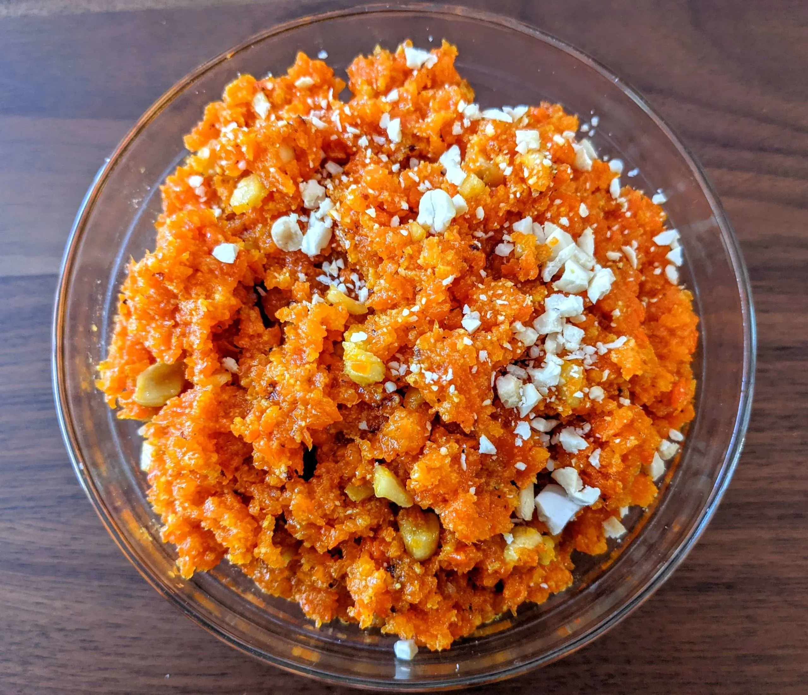

Home
Gajar ka Halwa

Description
A rich and delicious Indian dessert made with carrots, milk, and dry fruits.
Ingredients
- 1 kg red carrots, grated
- 1 liter full-fat milk
- 1/2 cup sugar
- 4 tbsp ghee
- 10-12 cashews, chopped
- 10-12 almonds, chopped
- 1/2 tsp cardamom powder
Steps
- Heat ghee in a heavy-bottomed pan
- Add grated carrots and sauté for 5 minutes
- Add milk and cook on medium heat
- Stir occasionally until milk reduces completely
- Add sugar and mix well
- Cook until halwa thickens
- Add cardamom powder and dry fruits
- Cook for another 2-3 minutes